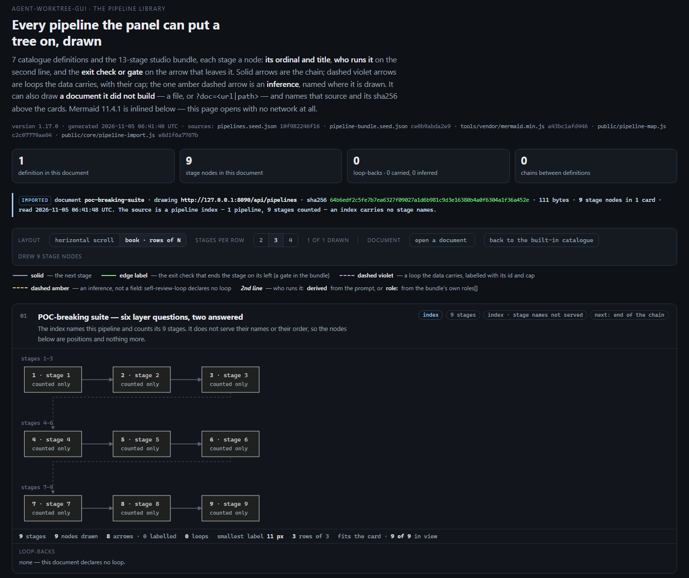
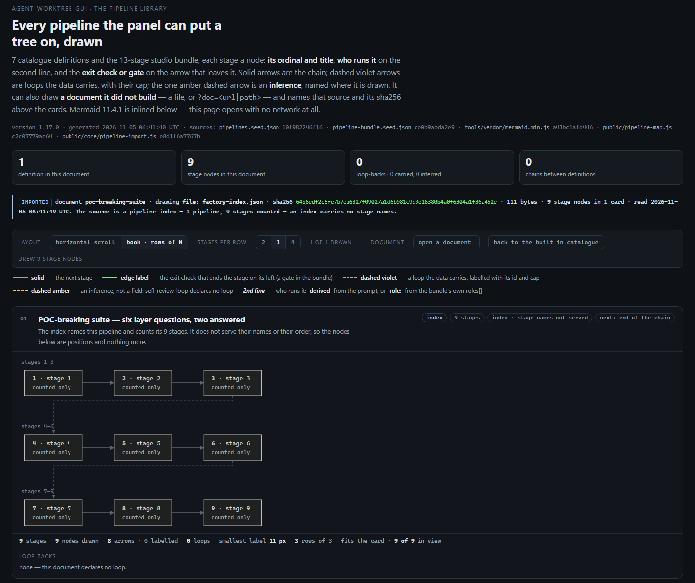
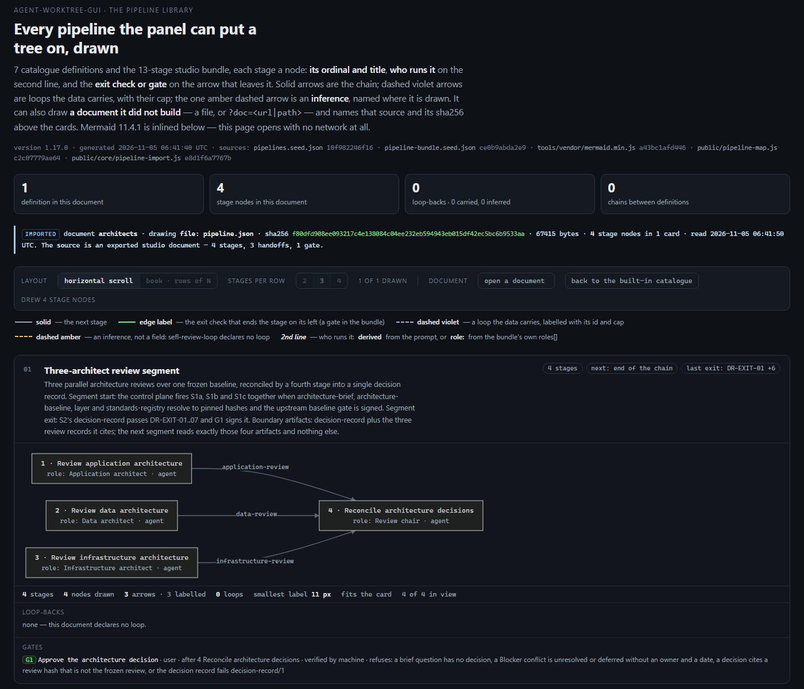
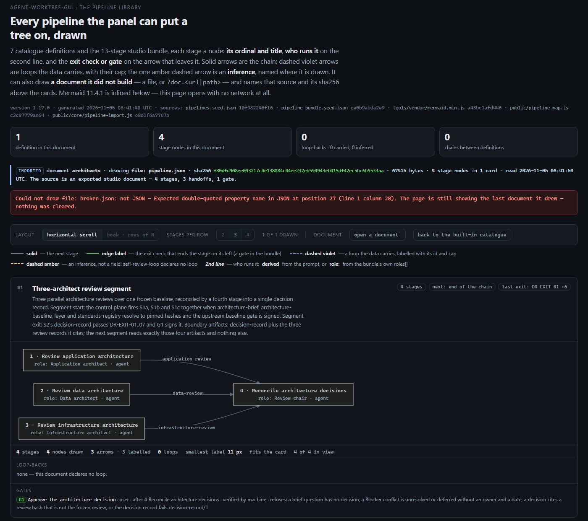

agent-worktree-gui · the pipeline map · import capture round
Two documents that came out of the factory, drawn by public/pipeline-map.html through
?doc= and through open a document, each shot printing the document's own id and the sha256 of
the exact bytes beside the drawing — and one malformed document that must not take the drawing down.
Three drawings and one refusal, all four from documents the factory produced. The factory's own index
(?doc=http://127.0.0.1:8090/api/pipelines) draws 9 counted stage nodes in 1 card; the same
111 bytes through the file input draw the same 9 nodes from the same sha256
64b6edf2…a452e, and the two drawing crops are byte-identical (23,718 B, sha256
35d1ebf1…8c1b). The studio's export of a second pipeline (architects, 4 named
stages) draws its 4 nodes in its own order. A malformed document prints one red sentence naming the file and
leaves the architects drawing standing — 4 nodes, same sha256, same id, the sequence counter unmoved.
Every shot prints the document's id and the sha256 of the bytes it drew, because this branch puts the id on
the provenance line (public/pipeline-map.js): document poc-breaking-suite · drawing
<source> · sha256 <64 hex> · 111 bytes · 9 stage nodes in 1 card. Before this branch the line
named the source and the hash but not the document, so a shot could not be matched to a factory entry by the one
name the factory serves.
The import gate ran 36 passed, 0 failed against the live factory, with
--document pointed at both the POC-breaking suite (9 stages) and the architects export (4 stages). On
the pre-change page the same gate is 2 failed, 34 passed — both failures are the
document-id checks, which is the proof those two lines do the work.
The sandbox panel is tools/panel-testkit.mjs's startPanel({}) — its own data dir and a
free port, no scan traffic repainting the page. The page is the committed public/pipeline-map.html from
this tree; the documents are read live, not from a fixture:
node tools/capture-pipeline-import.mjs \ --live http://127.0.0.1:8090/api/pipelines \ --document <ai-development-factory>/docs/pipelines/architects/pipeline.json \ --shots <scratch> --json <scratch>/capture.json node tools/verify-pipeline-import.mjs --live http://127.0.0.1:8090/api/pipelines \ --document <ai-development-factory>/docs/pipelines/architects/pipeline.json
The capture tool asserts nothing about a constant: each case's expected stage count comes from the document it was
handed (the index's stageCount, the studio document's stages[]), so a second pipeline is
certified by its own numbers. The shots are the region from the page's kicker to the card's last row, at 1400 CSS px
and deviceScaleFactor 1, so each figure is 1:1 with the pixels the numbers describe.
One control was pressed, and it is the page's own. A nine-stage chain at 1:1 is wider than the card
(.wrap caps at 1400 px), so the default row layout hides its tail — the earlier reading was
358 px past the card — scroll · 7 of 9 in view. The capture presses book · rows of N (3 per
row) for that chain, and the card's own status line then reads 3 rows of 3 · fits the card · 9 of 9 in view.
The four-stage document is one row, untouched: fits the card · 4 of 4 in view. Book mode is refused for
it (its three arrows converge on S2), and the page says so — which is why it is photographed in row mode.
| document | where it came from | bytes | sha256 | shape | stages |
|---|---|---|---|---|---|
| poc-breaking-suite | GET http://127.0.0.1:8090/api/pipelines — the factory's live index |
111 | 64b6edf2c5fe7b7ea6327f09027a1d6b981c9d3e16380b4a0f6304a1f36a452e | index — [{id, title, stageCount}] |
9 (counted, not named) |
| poc-breaking-suite (same bytes) | the same 111 bytes saved as factory-index.json and read through open a document |
111 | 64b6edf2c5fe7b7ea6327f09027a1d6b981c9d3e16380b4a0f6304a1f36a452e | index | 9 |
| architects | the studio's semantic export, ai-development-factory/docs/pipelines/architects/pipeline.json
({version, project, stages[], handoffs[], gates[], roles[]}, position stripped,
keys sorted — what semanticPipeline() in tools/pipeline-studio/core.js writes) |
67,415 | f80dfd908ee093217c4e138084c04ee232eb594943eb015df42ec5bc6b9533aa | studio — one project, 4 named stages, 3 handoffs, 1 gate |
4 |
The factory serves one pipeline. GET /api/pipelines answers a one-entry
index today — [{"id":"poc-breaking-suite","title":"POC-breaking suite — six layer questions, two answered",
"stageCount":9}] — and the service has no route that serves a full document. So "one more factory pipeline"
cannot be a second index entry: it is the studio's export from the same factory project, which is the other source
the brief names. That is a fact about the factory, not a gap in this round.
| # | entry | document | stages in doc | nodes drawn | layout | card's own sentence | verdict |
|---|---|---|---|---|---|---|---|
| 1 | ?doc=<url> | poc-breaking-suite · index | 9 | 9 | book, 3 rows of 3 | 3 rows of 3 · fits the card · 9 of 9 in view |
drawn |
| 2 | file input | poc-breaking-suite · index, same bytes | 9 | 9 | book, 3 rows of 3 | 3 rows of 3 · fits the card · 9 of 9 in view |
round trip |
| 3 | file input | architects · studio export | 4 | 4 | row, 1:1 | fits the card · 4 of 4 in view |
drawn, not a round trip |
| 4 | file input, malformed | none — broken.json is refused |
— | 4 (the previous drawing) | unchanged | 4 stages · 4 nodes drawn … fits the card · 4 of 4 in view |
refused, drawing kept |

?doc=. poc-breaking-suite,
http://127.0.0.1:8090/api/pipelines, 111 bytes, sha256
64b6edf2c5fe7b7ea6327f09027a1d6b981c9d3e16380b4a0f6304a1f36a452e. The document counts
9 stages and does not name them, and the drawing says so twice: every node reads counted only, and the
provenance line ends “The source is a pipeline index — 1 pipeline, 9 stages counted — an index carries no
stage names.” 9 stage nodes drawn, 8 arrows, 11 px smallest label.

open a document. poc-breaking-suite,
file: factory-index.json, 111 bytes, the same sha256
64b6edf2c5fe7b7ea6327f09027a1d6b981c9d3e16380b4a0f6304a1f36a452e. Same 9 nodes, same
3 rows of 3, same card sentence. The two drawing crops (the card's drawing element, without the page chrome) are
byte-identical — 23,718 B each, sha256 35d1ebf173f22afbe6b1ce5d8523cf2164638dfbf965b45b0d72bbfdf3578c1b
— so this is a round trip of the picture, not a resemblance.

G1 below. Book mode is disabled for it and the button says why: its arrows
converge, so a row break would draw a sequence the document does not declare.

broken.json, a real export cut
before its first closing brace) prints one red sentence — “Could not draw file: broken.json: not JSON —
Expected double-quoted property name in JSON at position 27 (line 1 column 28). The page is still showing the last
document it drew — nothing was cleared.” The provenance line still names architects
and its sha256, the card still draws its 4 nodes in 4 of 4 view, and the document sequence counter did not move:
nothing was drawn, and nothing was cleared.
| shot | round trip? | why |
|---|---|---|
1 — ?doc= the factory's index | one end | the first read of the 111 bytes the factory served. |
| 2 — the same bytes by file input | the round trip | the same sha256 (64b6edf2…), the same 9 nodes, and the drawing crops byte-identical
(35d1ebf1…): the bytes survived the trip from the factory to a file and back onto the page
unchanged, and the page drew them identically. |
| 3 — the studio's export of architects | not a round trip | a different document, read once. It proves the map draws a second factory pipeline with its own stage names, count and order — not that any bytes made a return trip. |
| 4 — the refusal | not a drawing at all | the malformed bytes are refused; the shot's value is that the previous drawing is still there. |
Strictly: only shot 2 is the round trip, and it is only a round trip of shot 1 — the pair is one proof in two pictures. Shot 3 is the breadth (another pipeline, named stages), shot 4 is the failure path.
stageCount is computed.architects document was exported from the studio but the
studio itself was not opened; nothing here says the two surfaces draw it the same way.?doc=
at boot, an empty document and a non-pipeline object, but those are assertions with no shot.file: pipeline.json); the document's identity is the document architects prefix this
branch added, and the full path lives in this page's Method.public/**; the reader's own panel was not opened for these shots.The shots and the ledger are under docs/reviews/pipeline-import-round/ beside this page, like every
earlier capture round (pipeline-flow-visual-round-5b/, -5c/,
pipeline-readability-audit/). No rows were added to docs/reports/: in this repo that
directory holds four standalone operational reports and has no index or row convention to extend — the reports it
carries are about the panel's own operation (worktree retirement, the reset store), not about a capture round. The
capture ledger is this round's record, and it is one file beside the pictures it describes.
Reproduce: node tools/capture-pipeline-import.mjs with the two arguments in Method,
writing to a scratch directory (a run pointed at docs/reviews/pipeline-import-round overwrites the
committed shots, whose hashes are in the ledger). The page's own version line reads 1.17.0 and its sources ledger
names public/pipeline-map.js c2c07779ae64.